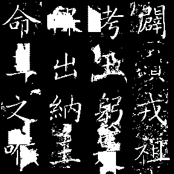
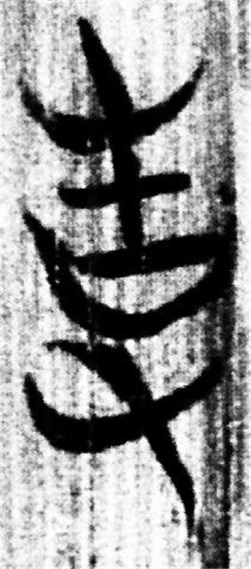
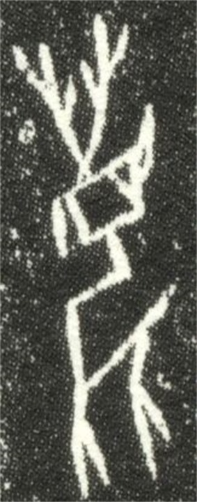

背景
碑拓材料记录了大量历史文献、书法形态和地方文化信息，但真实拓片常伴随风化、剥蚀、墨迹不均、局部缺失与扫描噪声。智能修复需要同时维护可读性、字形真实性与拓片视觉风格。
面向碑刻、拓片、摩崖等残损材料，研究如何在尊重原始书写结构与拓印质感的前提下恢复缺失笔画、噪声区域与断裂字形。
碑拓材料记录了大量历史文献、书法形态和地方文化信息，但真实拓片常伴随风化、剥蚀、墨迹不均、局部缺失与扫描噪声。智能修复需要同时维护可读性、字形真实性与拓片视觉风格。


论文加载中...
面向古籍、简牍、书法、碑刻、帛书、甲骨等多载体历史文献，研究跨材料、跨时代、跨书写形态的视觉识别与文本校勘。
历史文献并不只存在于纸本古籍中。不同载体拥有不同版式、材质、破损方式和字形演化特征，阅读任务需要从图像感知延伸到字符识别、上下文推理与知识校正。




论文加载中...
聚焦甲骨、金文、简帛、篆隶等古文字形态，预留面向单字级形体补全、异体字对齐与风格一致性恢复的研究框架。
古汉字材料常以残片、拓印、摹本或局部字形图像出现。与碑拓整幅修复不同，古汉字修复更强调单字结构、部件组合、字族关系与文字演化线索。
该方向暂未挂载论文，后续可接入字符级数据集、字形补全可视化与专家校验流程。
论文加载中...
预留面向韵书、反切、诗词押韵、方音演化与历史语音重建的研究方向，将文本证据与可计算音系建模连接起来。
中国古代音韵研究依赖韵书、等韵图、反切材料、诗文押韵与方言比较。数字化后，可以把离散文献证据组织成可检索、可推理、可视化的音韵知识网络。
该方向暂未挂载论文，后续可接入音韵数据库、押韵检索和历史音系可视化。
论文加载中...